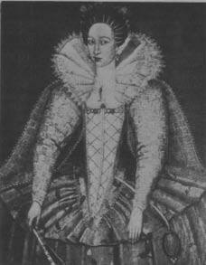

2. Bölüm
Biyografi yazarı şimdi bir zorlukla karşı karşıya, onu geçiştirmektense itiraf etmesi daha iyi olabilir. Orlando’nun hayat hikâyesini anlatırken, bu noktaya gelene kadar hem şahsi hem de tarihi belgeler bir biyografi yazarına düşen ilk görevin yerine getirilmesini mümkün kılmışlardı ki bu görev, sağa sola bakmadan gerçeğin silinmeyen ayak izlerini ağır adımlarla takip etmektir; çiçeklerin cazibesine kapılmadan; gölge aramadan; sistemli bir şekilde ilerleyerek mezara devrilene ve başlarımızın üzerindeki mezar taşına “son” yazılana kadar. Ama şimdi öyle bir bölüme vardık ki, o bölüm tam yolumuzun üzerinde, bu nedenle görmezden gelemeyiz. Ancak karanlık ve gizemli bir bölüm bu, üstelik belgelenmemiş; dolayısıyla açıklanamıyor. Onu yorumlayacak ciltlerce kitap yazılabilir; önemi üzerine koca koca dinsel sistemler kurulabilir. Bizim basit görevimiz bilindiği kadarıyla gerçekleri dile getirmek; bırakalım okur nasıl isterse öyle kullansın onları.
Sayısız felaketin yaşandığı, dona, sele, binlerce ölüme ve Orlando’nun bütün umutlarının yıkımına tanık olan –çünkü Saray’dan kovulmuştu; dönemin en güçlü asilzadelerinin gözünden düşmüştü; İrlandalı Desmondlar11 haklı olarak hiddetlenmişlerdi; Kral’ın başı zaten İrlandalılarla dertteydi, üstüne eklenen bu durumdan hoşlanmamıştı– o kışın ardından gelen yaz aylarında Orlando şehir dışındaki büyük evine çekildi ve orada tam bir yalnızlık içinde yaşadı. Bir haziran sabahı –ayın on sekizine denk gelen bir cumartesiydi– her zamanki saatinde uyanmadı, uşağı ona bakmaya gittiğinde derin bir uykuda olduğunu gördü. Uyanmıyordu. Kendinden geçmişçesine yatıyordu, soluk alışı bile duyulamıyordu; penceresinin altına havlasınlar diye köpekler gönderildi; odasında sürekli çembalolar, davullar, kastanyetler çalındı; yastığının altına karaçalı dalı, ayaklarına hardal yakısı koydular; yine de ne uyandı ne yemek yedi ne de yedi gün boyunca bir yaşam belirtisi gösterdi. Yedinci gün her zamanki saatinde uyandı (tam olarak sekize çeyrek kala), kedi gibi miyavlayan kadınların, köy kâhinlerinin hepsini odasından çıkarttı, ki pek doğaldı bu; doğal olmayan, geçirdiği trans halinin bilincinde olduğunu gösteren bir işaret vermemesiydi, sanki bir gecelik uykudan uyanmış gibi giyindi, atını getirtti. Yine de beyninin kıvrımlarında bir değişiklik olduğundan kuşkulandılar, çünkü tamamen mantıklı davransa da, eskisinden daha ciddi ve çok daha ağırbaşlı görünse de, geçmiş hayatını eksiksiz hatırlamıyor gibiydi. İnsanlar büyük dondan, paten kaymadan ya da karnavaldan söz ederken onları dinliyordu, ama bir lekeyi silmek ister gibi elini alnına sürmek dışında, bütün bunlara kendisinin de tanık olduğunu gösteren bir tavrı yoktu. Son altı ayın olayları tartışılırken üzülmekten çok şaşırmış görünüyordu, sanki uzun zaman öncesinde kalmış karışık anılar aklını karıştırıyormuş ya da bir başkasından dinlediği hikâyeleri hatırlamaya çalışıyormuş gibiydi. Söz Rusya’ya ya da prenseslere ya da gemilere gelince, tedirgin olup hüzünleniyor, ayağa kalkıp pencereden dışarı bakıyor, köpeklerden birini yanına çağırıyor ya da eline bir bıçak alıp bir sedir ağacı parçasını oyuyordu. Ama o günün doktorları da bugünkülerden daha bilge değildiler, akıllarına ne gelirse önerdiler ona, uyandığında baharatlı sıcak süte karıştırılmış su kertenkelesi tükürüğü, yatarken tavuskuşu ödü içmesini söyledikten, her zamanki sakinleştiriciler ve tahrik edici ilaçlarla birlikte hem dinlenmesini hem hareketsiz kalmamasını, hem aç kalmasını hem beslenmesini, hem insanların içine karışmasını hem yalnızlığı, hem bütün gün yataktan çıkmamasını hem öğle yemeğiyle akşam yemeği arasında atla seksen kilometre yol yapmasını öğütledikten sonra onu rahat bıraktılar, bize kalırsa Orlando bir hafta boyunca uyumuş, dediler.
Ama eğer uyuduysa, nasıl bir uykuydu bu, diye sormaktan kendimizi alamıyoruz. Bu tür uykular sağaltıcı mıdır, simsiyah bir kanadın en can sıkıcı anılara, hayatı tam anlamıyla sakatlayan olaylara dokunup onların, en çirkin ve en adi olanlarının bile, kabalıklarını giderip bir ışıltıyla, bir parıltıyla süslediği trans halleri midir? Ölümün parmağının, bizi parçalamasın diye hayatın karmaşasının üzerine ara sıra dokunması mı gerekmekte? Ölümü her gün ufak dozlarda almazsak yaşamayı beceremeyecek bir yapıda mıyız? Nasıl tuhaf güçlerdir ki bunlar, en gizli köşelerimize nüfuz ediyor, sahip olduğumuz en değerli şeyleri biz istemeden değiştiriyorlar? Çektiği korkunç acılarla yıpranan Orlando bir haftalığına ölüp sonra yeniden dirilmiş miydi? Eğer öyleyse, ölümün doğası nasıldır, ya hayatın doğası? Bu sorulara yarım saatten fazla yanıt bekledik, ama yanıt gelmedi, öyleyse hikâyemize devam edelim.
Orlando tamamen münzevi bir hayat sürdürmeye başladı. Bunun nedeni kısmen sarayda gözden düşmesi ve kapıldığı derin kederdi, ama kendini savunmaya kalkışmadığı, evine pek konuk da çağırmadığı için (oysa seve seve ziyaretine gelecek pek çok arkadaşı vardı), atalarından kalan o büyük evde tek başına olmaktan hoşlandığı sonucuna varıldı. Yalnızlık onun tercihiydi. Zamanını nasıl geçirdiğini bilen yoktu. Yanında çalıştırdığı çok sayıdaki hizmetkâr –aslında boş odaları temizlemekten ve yatılmayan yatakların örtülerini düzeltmekten başka işleri yoktu– akşam çökünce oturup çörek yiyip bira içerken, koridorlardan, ziyafet salonlarından, merdivenden yukarı, yatak odalarının içine bir ışık geçtiğini görüyor ve efendilerinin evi tek başına denetlediğini anlıyorlardı. Onun peşinden gitmeyi hiçbiri göze alamıyordu, çünkü evde çeşit çeşit hayaletler dolaşıyordu, öyle çoktu ki bunlar, evdekiler kolayca yollarını şaşırabiliyorlardı, ya gizli bir merdivenden aşağı yuvarlanabiliyor ya da, eğer rüzgâr eserse, insanın üzerine sonsuza kadar kapanacak bir kapıyı açabiliyorlardı – bu tür kazalar hep olurdu, büyük acılar içinde kıvranmış insanların ve hayvanların iskeletleri bulunduğunda sıkça görülmüştür bu. Sonra ışık tamamıyla kaybolurdu, kâhya Mrs. Grimsditch rahip Mr. Dupper’e, umarım beyefendinin başına kötü bir kaza gelmemiştir, derdi. Mr. Dupper, beyefendi şapelde, atalarının mezarlarının arasında diz çökmüştür kuşkusuz, derdi, şapel 800 metre kadar güneyde, Bilardo Masası Avlusu’ndaydı. Beyefendinin vicdanının rahat olmamasından korkuyordu Mr. Dupper; bunun üzerine Mrs. Grimsditch, sertçe, çoğumuzunki rahat değildir, diye yanıtlardı onu; Mrs. Stewkley ve Mrs.Field ve yaşlı dadı Carpenter seslerini yükseltip efendilerini överlerdi; uşaklar ve vekilharçlar da bu kadar soylu bir beyefendinin tilki avlamak ya da geyik kovalamak yerine evin içinde dolaşmasının çok yazık olduğunu söylerlerdi ısrarla; hatta çamaşırlarla ya da mutfakla ilgilenen hizmetçiler, Judy’ler ve Faith’ler bile, içki maşrapalarını ve çörekleri masada dolaştırırken beyefendinin ne kadar kibar olduğuna tanığız derlerdi, tiz sesleriyle; çünkü ondan daha nazik ya da daha cömert birini tanımıyorlardı, bir bağ kurdele ya da saçlarına takacakları çiçekleri satın almalarına yetecek gümüş paraları esirgemiyordu onlardan; sanki Hıristiyanmış gibi Grace Robinson diye çağırdıkları siyahi kadın bile onların kafasından neler geçtiğini anlamış ve beyefendinin yakışıklı, hoş, sevimli biri olduğunu kendince ifade etmişti, yani dişlerini göstere göstere sırıtmıştı. Kısacası Orlando’nun yanında çalışan kadınlar ve erkekler ona büyük saygı gösteriyor, onu bu hale getiren yabancı prensese (tabii ona daha kötü bir isim takmışlardı) lanetler yağdırıyorlardı.
Mr. Dupper’ın, beyefendinin mezarların arasında güvenlikte olduğunu, gidip onu aramasına gerek olmadığını hayal etmesi büyük olasılıkla korkaklığından ya da sıcak birayı sevmesindendi, belki de haklıydı Mr. Dupper. Orlando ölümü ve yok olmayı düşünmekten tuhaf bir zevk alıyordu, elinde ince bir mumla, bulamadığı birinin benzerini ararcasına resimlere tek tek bakarak koridorlardan ve balo salonlarından geçtikten sonra kilisede ailesine ayrılan dua yerine çıkar, bayrakların kımıldamasını, bir yarasanın ay ışığını titretmesini ya da kendisine eşlik eden ölübaş kelebeğini seyrederek saatlerce otururdu orada. Bu bile yetmezdi ona, kilisede atalarının yattığı, on kuşağın tabutlarının üst üste yığıldığı mezara inmek isterdi. Oraya o kadar az giren olurdu ki, fareler kurşundan yapılma nesnelerin arasında cirit atardı, Orlando geçerken pelerinine bir kalça kemiği takılırdı ya da ayaklarının altına yuvarlanan Sir Malise diye yaşlı birinin kafatasına basıp onu çatlatırdı. Ürkütücü bir kabirdi; evin temellerinin altı epeyce kazılıp yapılmıştı, sanki Fransa’dan Fatih William’la birlikte gelen ailenin ilk Lord’u, bütün saltanatın yozlaşmanın üzerinde nasıl yükseldiğini kanıtlamak istemişti; nasıl etin altında iskeletin bulunduğunu; yukarıda dans eden ve şarkı söyleyen bizlerin aşağıda nasıl yatacağımızı; kırmızı kadifenin nasıl toza dönüştüğünü; yüzüğün (elindeki feneri eğen Orlando düşüp bir köşeye yuvarlanmış taşı eksik bir altın halkayı yerden alır) yakutunun nasıl kaybolduğunu, önceleri onca ışıltılı olan gözün artık nasıl parlamadığını. “Bu prenslerden geriye bir şey kalmamış” derdi Orlando, onların mevkilerini abartması mazur görülebilirdi, “bir tek parmak dışında”; ve bir iskeletin elini eline alarak eklemlerini o yana bu yana döndürürdü. “Bu kimin eliydi?” diye sormaya devam ederdi. “Sağ el mi sol mu? Kadın eli mi erkek eli mi, yaşlı mı genç mi? Savaşa giden atı mı dürttü, yoksa iğne mi kullandı? Gül mü kopardı, yoksa soğuk çeliği mi kavradı? Acaba–” Ama bu noktada ya artık söyleyecek bir şey bulamadı, ya da daha büyük olasılıkla, aklına bir elin yapabileceği o kadar çok şey geldi ki, düzenlemenin en zor kısmından, yani ayıklama işinden, âdeti olduğu üzere vazgeçti, kemiği öbür kemiklerin yanına koydu, bir yandan da bu konularda yazdığı yazılarla kendisinin hayalgücünü müthiş meşgul eden, Norwich’li doktor Thomas Browne adında bir yazar olduğunu düşünüyordu.
Fenerini eline alıp kemiklerin yerli yerinde durduğuna emin olunca, çünkü romantik biri olsa da, son derece sistemliydi, yere yuvarlanmış bir ip yumağından daha fazla kızdığı bir şey yoktu, nerede kalmış bir atasının kafatası, yeniden koridorlarda merakla, huysuzca gezinmeye devam etti, resimlerin arasında bir şey arıyordu, sonunda, meçhul bir sanatçının elinden çıkmış, Hollanda’ya ait bir kar manzarası karşısında gerçek bir ağlama nöbetine kapılınca arayışı yarıda kesildi. O anda artık hayatın yaşamaya değmeyeceğini düşündü. Atalarının kemiklerini ve hayatın bir mezar üzerine oturtulduğunu unutarak orada hıçkıra hıçkıra ağlayarak kalakaldı, bütün bunlar Rus pantolonu giymiş, çekik gözlü, somurtkan, inci kolyeli bir kadına duyduğu arzu yüzündendi. Gitmişti. Onu terk etmişti. Onu bir daha asla görmeyecekti. Ağlayıp durdu. Bu halde odasına döndü; Mrs. Grimsditch penceredeki ışığı görünce maşrapayı ağzından çekti, Tanrı’ya şükretti, efendisi yeniden salimen odasındaydı; çünkü onun feci şekilde öldürülmüş olduğunu düşünmüştü.
Orlando sandalyesini masanın yanına çekti; Sir Thomas Browne’ın kitaplarını açtı ve doktorun en uzun ve olağanüstü dolaşık fikirlerinden birini incelemeye koyuldu.
Bu tür meseleler bir biyografi yazarının yararlanıp kullanacağı şeyler olmasa da, şuraya buraya serpiştirilmiş görünür ipuçlarından okur konumundaki kişilerin yararlanıp yaşayan bir insanın içinde bulunduğu sınırları ve onu kuşatan çemberi oluşturmaları oldukça basittir; onlar bizim fısıltımızda bile canlı bir ses duyabilirler; çoğunlukla biz bir şey söylemesek de nasıl biri olduğunu görebilirler; kendilerine yol gösterecek tek bir kelime olmadan ne düşündüğünü harfi harfine bilebilirler –biz de işte bu tür okurlar için yazarız; böyle bir okur, Orlando’nun pek çok niteliği tuhaf bir biçimde kendisinde birleştirdiğini açıkça görür – melankoliyi, tembelliği, tutkuyu, yalnızlık sevgisini; ilk sayfada, ölü bir zencinin kafasına vurduğu, ipi kesip yere indirdiği, yeniden ulaşamayacağı bir yere nazikçe astığı, sonra elinde kitabıyla pencerenin girintisine oturduğu sahnede işaret edilen bütün o çarpıklıklar, tuhaf huylar da cabası. Kitaplara ilgisi erken yaşlarda başlamıştı. Çocukken bazen onu geceyarısı hâlâ kitap okurken bulurlardı. Mumunu alırlar, o da amacına ulaşmak için ateş böceği beslerdi. Ateş böceklerini aldılar, o da neredeyse evi çırayla yakıp kül ediyordu. Uzun lafın kısası, buruşmuş ipeği düzeltmeyi ve derinlerindeki anlamı aramayı romancıya bırakırsak, Orlando edebiyat sevgisi olan bir soyluydu. Döneminin pek çok kişisi, kendi sınıfından pek çok kişi de, buna bulaşmadılar, dolayısıyla keyiflenince gezmekte, ata binmekte ya da istedikleri gibi sevişmekte özgür kaldılar. Ama bazılarına, çirişotunun polenlerinden ürediği ve Yunanistan ya da İtalya’dan rüzgârlarla geldiği söylenen bir mikrop erkenden bulaştı, bu mikrop o kadar öldürücüydü ki, vurmak için kaldırılan eli sarsar, avını arayan gözü perdeler, aşkını söyleyen dili kekeletirdi. Gerçeğin yerine hayaletini geçirmek bu hastalığın ölümcül doğasıydı, bu yüzden, kaderin her türlü armağana –bol bol değerli sofra takımları, çarşaflar, evler, uşaklar, halılar, yataklar– boğduğu Orlando’nun bir kitabı açması yeterliydi bütün bunların silinip gitmesi için. Evini oluşturan dokuz dönümlük taş yok olurdu; yüz elli uşak kaybolurdu; seksen binek atı görünmez olurdu; halıları, kanepeleri, süslü sofra takımlarını, porselenleri, değerli tabak-çanağı, zeytinyağı-sirke şişelerini, ısıtma kaplarını ve çoğu dövme altından yapılma başka taşınabilirleri saymak çok vakit alır, bütün bunlar mikroplu hava altında kalan denizdeki sis gibi buhar olurdu. Böyle de oldu, çırılçıplak Orlando tek başına oturup kitap okudu.
Yalnız kalınca hastalık hızla hükmü altına aldı onu. Çoğunlukla gecelere kadar altı saat okuyordu; kesilecek sığırlar ya da buğday hasadı için ondan talimat almaya geldiklerinde kitabını öteye iter, ne söylendiğini anlamamış görünürdü. Pek kötüydü bu, kuş avcısı Hall’un, uşak Giles’in, kâhya Mrs. Grimsditch’in, rahip Mr. Dupper’ın yürekleri burkulurdu. Böyle zarif bir beyefendinin, derlerdi, kitaplara ne ihtiyacı var ki. Ama daha da beteri gelecekti. Okuma hastalığı bir kez insanın vücuduna girince onu öyle güçsüz düşürür ki, vücut mürekkep hokkasında yaşayan ve tüy kalemde cerahatlenen öbür belaya kolayca yem olur. Talihsiz kişi yazmaya başlar. Damı akan bir evde bir iskemle ve bir masadan başka bir şeyi olmayan yoksul biri için bu durum yeterince kötüyken –ne de olsa kaybedecek fazla bir şeyi yoktur– evleri, sığırları, hizmetçileri, eşekleri ve yatak takımları olan bir zenginin düştüğü kötü durum çok daha acınasıdır. Hiçbir şeyden tat almaz olur; kızgın demirler dağlar, kurtlar kemirir onu. Küçük bir kitap yazıp ünlü olabilmek için bütün servetini vermeye hazırdır (işte böyle habistir bu mikrop), ama Peru’nun bütün altınlarını verse, hazine değerinde, iyi kotarılmış bir satır satın alamaz. Bu yüzden tükenir, hastalanır, beynini patlatır, yüzünü duvara döner. Kendisini hangi halde bulacakları umurunda değildir. Ölümün kapılarından geçmiş, cehennemin alevlerini görmüştür.
Bereket Orlando sağlam yapılıydı ve hastalık (şimdi açıklayacağımız nedenlerle) pek çok akranını yıktığı gibi yıkmadı onu. Ama sonradan olanların gösterdiği gibi iyice bulaştı ona. Sir Thomas Browne’ın kitabını bir saat kadar okuduktan, geyiğin bağırışı ve gece bekçisinin sesi ona gecenin ileri bir saati olduğunu, herkesin çoktan uykuya daldığını hatırlattıktan sonra odanın karşı tarafına gitti, cebinden gümüş bir anahtar çıkardı, duvarın köşesine gömülü büyük bir dolabın kapısını açtı. Dolabın içinde sedir ağacından yapılma elli kadar çekmece bulunuyordu, her birinin üzerinde Orlando’nun yazısıyla düzgünce doldurulmuş bir kâğıt vardı. Hangisini açacağına karar verememiş gibi bir an durdu. Birinde “Ajax’ın Ölümü” yazıyordu, bir diğerinde “Piramus’un Doğuşu”, üçüncüsünde “Iphigenia Aulis’te”, dördüncüsünde “Hippolytus’un Ölümü”, bir başkasında “Meleager”, sonra “Odysseus’un Dönüşü” – aslında, kariyerinde kriz dönemi yaşayan bir mitoloji kahramanının adını taşımayan bir çekmece yok sayılırdı orada. Her çekmecede Orlando’nun yazıyla doldurduğu kalınca bir defter bulunuyordu. Aslına bakarsanız Orlando yıllardır kendini bu işe kaptırmıştı. Onun kâğıt dilendiği kadar bir çocuk elma verilsin diye dilenmemiştir; ya da onun mürekkep istediği kadar şekerleme isteyen çocuk olmamıştır. Sohbetlerden ve oyunlardan kaçar, bir elinde mürekkep hokkası, diğerinde kalem, dizlerinin üzerinde de bir tomar kâğıtla perdelerin arkasına, gizli köşelere ya da annesinin yatak odasındaki, dibinde kocaman bir delik olan, pis pis sığırcık dışkısı kokan dolaba saklanırdı. Yirmi beşine varmadan kırk yedi oyun, hikâye, roman, şiir yazmıştı böylece; kimi düzyazı, kimi şiir şeklinde; kimi Fransızca, kimi İtalyanca; hepsi romantik ve hepsi de uzun. Bunlardan birini bastırtmıştı, Cheapside’da, St. Paul’s Cross’un karşısındaki John Ball’un Tüyler ve Taç basımevinde; o kitabı görmekten müthiş zevk alsa da annesine bile göstermeye cesaret edememişti, çünkü yazmak, hele hele yayımlatmak bir soylu için bağışlanmaz bir yüzkarasıydı.
Şimdiyse, gecenin ilerlemiş bir saati ve kendisi de yalnız olduğuna göre, bu depodan adı “Xenophila Bir Trajedi” ya da ona benzer bir şey olan kalın bir defter seçti, bir tane de kısaca “Meşe Ağacı” adını taşıyan ince defter aldı (onca defter arasında bir tek bunun adı böyle kısaydı), sonra da mürekkep hokkasına yaklaştı, tüy kalemi elledi, bu günahın bağımlılarının ayinlerine başlarken yaptıkları hamlelerdi bunlar. Ama sonra durakladı.
Bu duraklamanın onun tarihinde çok önemli bir yeri vardı, gerçekten de insanları dizlerinin üzerine çöktüren, nehirleri kanlı akıtan pek çok şeyden daha önemliydi, Orlando’nun neden durduğunu sormak bize düşer; iyice düşündükten sonra bunun gibi bir nedenle olduğu yanıtını vermek de. Bize pek çok tuhaf oyun oynayan, bizi denge gözetmeden çamurdan ve elmastan, gökkuşağından ve granitten yaratan, bunları, çoğu kez son derece uyumsuz bir şekilde –çünkü şairin yüzü kasap yüzü gibidir, kasabınki de şair yüzü– bir çerçeveye oturtan doğa; şaşırtmaktan ve gizemlerden hoşlanan doğa, öyle ki şimdi bile (1927’nin 1 Kasım’ında) neden üst kata çıktığımızı ya da neden yeniden aşağıya indiğimizi bilmiyoruz, günlük hareketlerimizin çoğu bir geminin bilinmedik bir denizden geçmesi gibi, direğin tepesindeki denizciler, dürbünlerini ufka doğrultarak “Kara var mı, yok mu?” diye sorarlar; bu soruya, eğer kâhinsek, “Var” diye yanıt verebiliriz; dürüstsek, “Yok” deriz; bu cümleyi belki de hantallaştıran uzunluğu yanında hesabını vereceği daha pek çok şey olan doğa, sadece içimizde pılı pırtı dolu eksiksiz bir yama bohçası oluşturarak –bir polisin pantolonundan bir parça Kraliçe Alexandra’nın gelinliğinin tülüyle dip dibedir– kendi görevini daha da karmaşıklaştırmakla kalmamış, bütün bu çeşitlerin tek bir iplikle hafifçe birbirine tutturulmasını da ayarlayarak bizim kafamızı daha da karıştırmıştır. Bellek bir terzi kadındır, hem de kaprisli bir terzi. Bellek iğnesini batırıp çıkarır, bir aşağı bir yukarı, bir oraya bir buraya. Biraz sonra ne geleceğini bilmeyiz ya da daha sonra ne olacağını. Böylece, bir masaya oturmak ve mürekkep hokkasını önüne çekmek gibi dünyadaki en sıradan hareket, sert rüzgârda on dört kişilik bir ailenin ipte asılı çamaşırları gibi kâh parlayan, kâh kararan, sarkan ve kabaran ve yere yaklaşan ve azametle dalgalanan binlerce tuhaf, birbiriyle ilintisiz parçayı harekete geçirebilir. En sıradan eylemlerimize, kimsenin utanmasına gerek olmayan bir tek, yalın, özlü iş gibi değil de kanat çırpmalarla, azalıp çoğalan ışıklarla başlarız. Kalemini mürekkebe daldıran Orlando da kayıp Prenses’in alaycı yüzünü gördü ve hemen, zehre batırılmış oklara benzeyen bir milyon soru saplandı aklına. Prenses neredeydi; neden Orlando’yu terk etmişti? Büyükelçi onun amcası mıydı, sevgilisi miydi? Entrika mı kurmuşlardı? Kız zorlanmış mıydı? Kız evli miydi? Ölmüş müydü? Bütün bunlar zehirlerini Orlando’nun içine öyle bir akıttılar ki, ıstırabını bir yere boşaltmak istercesine tüy kalemini hokkaya öyle bir daldırdı ki, mürekkep masaya sıçradı, bu da hemen, istediğiniz gibi açıklayın bunu (belki de açıklamak olanaksızdır – belleği açıklamak mümkün değildir), Prenses’in yüzünün yerine bambaşka bir yüz geçirdi. Ama kimin yüzü bu, diye sordu Orlando kendi kendine. Ve belki yarım dakika kadar, üstü üste binmiş slaytlardan arkadakinin yarı yarıya görünmesi gibi geride kalan eskisinin üzerinde duran yeni resme bakarak bekledi, sonra kendi kendine şöyle dedi: “Bu, yıllar önce, yaşlı Kraliçe Bess buraya yemeğe geldiğinde Twitchett’in odasında oturan o oldukça şişman, kılıksız adamın yüzü; ben de,” diye devam etti Orlando, o küçük, renkli paçavralardan birini daha yakalarken, “onu masada otururken gördüm, aşağı inerken içeriye göz atmıştım, gözleri çok etkileyiciydi, hiç öylesini görmemiştim, ama kimdi o adam Tanrı aşkına?” diye sordu, çünkü o anda Bellek adamın alnının ve gözlerinin yanına, ilk başta, yağ lekeleri olan kaba bir fırfır ekledi, sonra kahverengi bir yelek, sonunda da Cheapside’lıların giydiği türden bir çift ağır çizme. “Bir soylu değil, bizden biri değil,” dedi Orlando (son derece nazik bir beyefendi olduğu için bunu yüksek sesle söylemiş olamaz; ama hem soylu kandan gelmenin zihin üzerinde nasıl bir etkisi olduğunu gösteriyor, hem de bir soylunun yazar olmasının ne kadar zor olduğunu), “bir şair olabilir ama.” Ne olursa olsun, Bellek, Orlando’yu yeterince rahatsız ettikten sonra, her şeyi tamamıyla silmiş olmalıydı, ya da –kediyi kovalayan köpek ya da kırmızı pamuklu bir mendile sümküren yaşlı bir kadın gibi– öyle saçma ve yersiz bir şeye el atmış olmalıydı ki, Belleğin kaprislerine ayak uydurmaktan umudunu kesen Orlando kalemini kâğıdına büyük bir ciddiyetle değdirmeliydi. (Çünkü yeterince kararlıysak, o edepsiz kadını, yani Belleği ve onun kıvır zıvırını sokağa atarız.) Ancak Orlando durdu. Belleği hâlâ iri, parlak gözlü, kılıksız bir adamın imgesini gözlerinin önüne getiriyordu. Hâlâ bakıyordu Orlando, hâlâ duruyordu. İşte bu duruşlar bizi mahveder. İşte o zaman kalede isyan çıkar, birliklerimiz ayaklanır. Daha önce de bir kez durmuştu, o zaman aşk gürültücü kalabalığıyla, kurmalı çalgılarıyla, çembalolarıyla, koparılan, kanlı buklelerle dolu kafalarıyla içeri dalmıştı. Aşk ona lanetlenmişlerin işkencesini çektirmişti. Şimdi yine durdu Orlando, bu şekilde ortaya çıkan çatlağa Hırs atladı, o cadaloz, ve Şiir, o cadı, ve Şöhret Arzusu, o orospu; hepsi el ele verdiler, onun kalbini dans pistine çevirdiler. Issız odasında, ayakta dikildi, kendi ırkının ilk şairi olacağına, adını sonsuza kadar duyuracağına yemin etti Orlando. Atalarının adlarını ve başarılarını sıralayarak, Sir Boris’in savaşıp Putperest’i öldürdüğünü; Sir Gawain’in Türk’ü; Sir Miles’ın Polonyalı’yı; Sir Andrew’un Frenk’i; Sir Richard’ın Avusturyalı’yı; Sir Jordan’ın Fransız’ı; Sir Herbert’in de İspanyol’u öldürdüğünü söyledi. Ama bütün bu öldürmelerden ve mücadelelerden, içmelerden ve sevişmelerden, tüketmelerden ve avlanmalardan ve at binmelerden ve yiyip-içmekten geriye ne kalmıştı? Bir kafatası; bir parmak. Oysa, dedi, masanın üzerinde açık duran Sir Thomas Browne’ın sayfasına dönerek –ve yine durdu. Odanın her yerinden, gece rüzgârından ve ay ışığından yükselen bir büyü gibi, o sözlerin ilahi melodisi duyuldu, bu sayfaya gözlerini dikip bizi tedirgin etmesinler diye onları gömüldükleri yerde bırakacağız, ölü değil de sanki mumya gibiler, renkleri öyle canlı, solukları öyle düzenli ki – ve bu çalışmayı atalarınınkilerle karşılaştıran Orlando onların ve yaptıklarının hiçbir değeri olmadığını, oysa bu adamın da sözlerinin de ölümsüz olduğunu haykırdı.
Sir Miles ile ötekilerin bir krallığı ele geçirmek için silahlı şövalyelere karşı giriştikleri savaşın, şimdi kendisinin ölümsüzlüğü elde etmek için İngiliz diline açtığı savaş kadar zahmetli olmadığını çok geçmeden anladı. Kompozisyon yazmanın zorlukları hakkında az da olsa bilgi sahibi olan birine bu hikâyeyi ayrıntılarıyla anlatmak gerekmez; nasıl yazdığını, yazdığını iyi bulduğunu; okuyunca beğenmediğini; düzelttiğini, sonra yırtıp attığını; bazı yerleri çıkardığını; bir şeyler eklediğini; coştuğunu; çaresiz kaldığını; gecelerinin iyi, sabahlarının kötü geçtiğini; fikirler bulup sonra kaybettiğini; kitabını bitmiş olarak gördüğünü, sonra kitabın kaybolduğunu; yemek yerken kahramanlarının rollerini oynadığını; yürürken onların ağzından konuştuğunu; kâh ağlayıp kâh güldüğünü; şu üslupla bu üslup arasında gidip geldiğini; önce görkemli ve cafcaflı olanı, sonra basit ve sade olanı seçtiğini; kâh Tempe’nin12 vadilerini, kâh Kent ya da Cornwall’un kırlarını yeğlediğini; kendisinin en ulu bir deha mı yoksa dünyanın en budala adamı mı olduğuna karar veremediğini filan.
Aylarca böyle hummalı bir şekilde çalıştıktan sonra, bu son soruya yanıt bulabilmek için yılların yalnızlığına son vermeye ve dış dünyayla iletişime geçmeye karar verdi. Londra’da Giles Isham adında Norfolk’lu bir arkadaşı vardı, soylu bir aileden gelse de bazı yazarları tanıyordu, kuşkusuz Orlando’yu o kutsanmış, hatta kutsal denebilecek kardeşliğin bazı üyeleriyle tanıştırabilirdi. Çünkü, şimdi içinde bulunduğu durumdayken Orlando, bir kitap yazıp bastırtmış olan birini öyle onurlu ve görkemli görüyordu ki, ona göre bu onur ve görkem, soylu bir kanın ve konumun getireceklerinden üstündü. Böylesi ilahi fikirlere sahip olanların bedenlerinin bile değişeceğini hayal ediyordu. Başlarında saç yerine hale, göğüslerinde soluk yerine rayiha olacaktı, dudaklarının arasında güller açacaktı – ki bunlar ne kendisi ne de Mr. Dupper için geçerliydi. Bir perdenin arkasında oturup onların konuşmalarını dinlemesine izin verilmesinden daha büyük bir mutluluk düşünemiyordu. O pervasız ve çeşitli konuşmaları hayal etmek bile kendisinin ve saraylı arkadaşlarının eskiden genellikle konuşmuş oldukları şeyleri –bir köpek, bir at, bir kadın, iskambil oyunu– son derece kaba saba kılıyordu. Kendisine hep bilgin denmiş olduğunu, yalnızlığı ve kitapları sevdiği için küçümsendiğini düşününce göğsü gururla kabardı. Güzel cümleler kurmayı hiçbir zaman becerememişti. Bir hanımefendinin evinin salonunda hep kazık gibi durur, kızarır, asker adımlarıyla dolaşırdı. Atından iki kez düşmüştü, sırf dalgınlıktan. Bir seferinde de şiir okuyayım derken Lady Winchilsea’nin yelpazesini kırmıştı. Toplum hayatına uygun olmadığını gösteren bu ve benzeri küçük olayları hevesle hatırlayınca, gençlik dönemindeki bütün çalkantıların, sakarlığının, yüz kızarmalarının, uzun yürüyüşlerinin ve kırsalı sevmesinin kanıtladığı üzere, kendisinin soyluların arasına değil de kutsanmış ırka dahil olduğuna dair tarifsiz bir umut kapladı içini. Büyük selin yaşandığı o geceden beri ilk kez mutluydu.
Norfolk’lu Mr. Isham’dan, Clifford’s Inn’deki Mr. Nicholas Greene’e bir belge iletmesini istedi; belgede Orlando onun çalışmalarına duyduğu hayranlığı (çünkü Nick Greene o günlerde çok ünlü bir yazardı) dile getiriyor, kendisiyle tanışmak istediğini belirtiyordu; bunu istemeye cesareti yoktu, çünkü karşılığında verecek bir şeye sahip değildi; ama eğer Mr. Nicholas Greene gönül indirip onu ziyaret ederse, hangi saatte isterse dört atlı bir araba Fetter Lane’in köşesinde onu bekleyecek ve alıp salimen Orlando’nun evine getirecekti. Bu dediğimizi izleyecek cümleleri tahmin etmek zor değil; aradan pek fazla zaman geçmeden Mr. Greene, Saygıdeğer Beyefendi’nin davetini kabul edip arabaya kurulunca ve 21 Nisan Pazartesi günü tam saat yedide ana binanın güney ucundaki salona girince Orlando’nun nasıl keyiflendiğini tahmin edebilirsiniz.
Orada pek çok kral, kraliçe ve büyükelçi karşılanmıştı; ermin kürklü yargıçlar durmuşlardı orada. Ülkenin en güzel hanımları oraya gelmişlerdi; ve de önemli cengaverleri. Flodden’de ve Agincourt’ta bulunmuş bayraklar asılıydı orada. Aslanlı, leoparlı, küçük taçlarla süslü armalar sergileniyordu. Uzun masalarda altın ve gümüş tabaklar duruyordu; işlenmiş İtalyan mermerinden büyük şömineler de vardı, geceleri, milyonlarca yaprağıyla, karga ve çalıkuşu yuvalarıyla birlikte koca bir meşe ağacının yanıp kül olduğu. Şimdiyse orada, başına gevşekçe oturttuğu şapkası ve siyah yeleğiyle, elinde taşıdığı küçük çantasıyla şair Nicholas Greene duruyordu.
Onu karşılamak üzere seğirten Orlando’nun biraz hayalkırıklığı yaşaması kaçınılmazdı. Şair orta boyluydu, görünümü sıradandı, zayıftı ve biraz kambur duruyordu, içeri girerken ayağı bekçi köpeğine takılınca köpek onu ısırmıştı. Dahası, Orlando insanlar hakkında ne kadar şey bilse de onu bir türlü bir yere yerleştirememişti. Bu adamda öyle bir şey vardı ki ne uşak diyebiliyordunuz, ne eşraf ne de soylu. Kavisli alnı ve gaga gibi burnuyla kafası fena değildi, ama çenesi içeri çekikti. Gözleri parlıyordu ama dudakları sarkıktı, salyası akıyordu. Ama insanı asıl tedirgin eden, tümüyle bakıldığında, yüzündeki ifadeydi. Soyluların yüzünü, zevkle bakılacak hale getiren o görkemli soğukkanlılıktan onda eser yoktu; iyi eğitimli bir hizmetkârın vakur boyun eğişi de görülmüyordu; buruşuk, kırışık ve büzülmüş bir surattı. Şair olsa da iltifattan çok azarlamaya alışık gibi görünüyordu; cilveleşmekten çok kavga etmeye; ata binmekten çok sürünerek ilerlemeye; dinlenmekten çok mücadele etmeye; sevmekten çok nefret etmeye. Bunu da hareketlerindeki telaş gösteriyordu; bir de ateşli ve kuşkulu bakışları. Orlando şaşırmıştı. Ama yemeğe oturdular.
Genellikle böyle şeyleri doğal kabul eden Orlando, uşaklarının sayısından ve sofrasının görkeminden ilk kez inanılmaz derecede rahatsız oldu. Daha da garip olanı, inek sağmış olan büyük-büyükannesi Moll geldi aklına ve gurur duydu, oysa onu düşünmekten genellikle hiç hoşlanmazdı. Tam bu mütevazı kadına ve süt kovalarına değinmek üzereydi ki, şair ondan önce davrandı ve Greene adı ne kadar sıradan sayılsa da ailesinin Fatih William’la birlikte gelmiş olduğunu ve Fransa’nın en soylu ailelerinden olduğunu söyledi. Ne yazık ki nüfuzlarını yitirmişler ve Greenwich kasabasına adlarını vermekten öte bir şey yapamamışlardı. Sofraya geyik eti gelene kadar benzer şekilde sürdü sohbet, elden giden şatolar, armalar, kuzeyde baronet olan kuzenler, batıda soylu aileler arasındaki evlilikler, bazı Green’lerin adlarının sonuna e harfini ekledikleri, bazılarınınsa eklemedikleri filan. Sonra Orlando büyükanne Moll ve inekleri hakkında bir şeyler söylemeye çabaladı, yaban horozu önlerine konulana kadar da yüreğindeki yükü biraz hafifletmişti. Ama tatlı şarap sofraya getirilene kadar Orlando, Green’lerle ineklerden daha önemli bir mesele olduğunu düşünmeden edemediği bir konuyu açmayı göze alamadı; yani kutsal şiir konusunu. Orlando o kelimeyi ağzına alır almaz şairin gözleri ateş saçtı; takındığı kibar beyefendi tavrını bıraktı, kadehini masaya sertçe vurdu, oyunlarından biri, bir başka şair ve bir eleştirmen hakkında Orlando’nun –terk edilmiş bir kadını saymazsak– o güne kadar kimsenin ağzından duymadığı en uzun, en karmaşık, en tutkulu ve en buruk hikâyelerden birini anlatmaya girişti. Şiirin doğası hakkında Orlando’nun öğrendikleri, onun düzyazıdan daha zor satıldığı ve dizeler daha kısa olsa da yazmasının daha uzun sürdüğüyle sınırlı kaldı. Sohbet böylece dal budak sararak bitmek bilmeden sürdü, sonunda Orlando kendisinin de yazmaya cesaret ettiğine değinmeyi göze aldı, ama o anda şair koltuğundan fırladı. Duvar kaplamasının içinde bir fare ciyakladı, dedi. Aslında sinirlerim öyle gergin ki, dedi, bir fare ciyaklasa tam iki hafta düzelemiyorum. Kuşkusuz ev haşarat doluydu, ama Orlando seslerini duymamıştı. O zaman şair Orlando’ya son on yıllık sağlık raporunu anlattı. Sağlığı öyle kötüydü ki, hâlâ hayatta olması mucize sayılırdı. Felç geçirmişti, gut hastasıydı, sıtma olmuştu, ödemi vardı, peş peşe üç kez farklı nedenlerle ateşlenmişti; ayrıca kalbi büyümüştü, dalağı şişmişti, karaciğeri de hastalıklıydı. Ama hepsinden öte, omuriliğimdeki duyarlık anlatılır gibi değil, dedi Orlando’ya. Üstten üçüncü omuru ateş gibi yanıyordu; alttan ikincisi de buz gibi soğuktu. Bazen uyandığında beyni kurşun gibi ağır oluyordu; bazen de sanki binlerce ince mum yanarken insanlar onun içine havai fişekler atıyorlarmış gibi hissediyordu. Şiltemin altındaki gül yaprağını hissedebilirim diyordu; parke taşlarına basarak Londra’da neredeyse hiç şaşmadan yolumu bulabilirim. Bütünüyle bakıldığında mükemmel yapılmış ve ilginç bir şekilde birleştirilmiş bir makineydi kendisi (burada farkında değilmiş gibi elini kaldırdı, gerçekten de akla gelebilecek en zarif biçimli eldi o), bu yüzden şiirlerinden sadece beş yüz nüsha satabildiğini düşününce kahroluyordu, ama bu, büyük ölçüde kendisine karşı düzenlenen komplo yüzündendi. Bütün diyebileceğim, diye tamamladı sözünü, masaya yumruğunu indirerek, İngiltere’de şiir sanatı ölmüştür.
Shakespeare, Marlowe, Ben Jonson, Browne, Donne diye en sevdiği kahramanların adlarını sıralayan Orlando, bunlar halen şiir yazarken ya da yakın zamanda yazmışken, böyle bir şey nasıl mümkün olabilir, dedi.
Greene alaycı alaycı güldü. Shakespeare’in oldukça iyi bazı oyunlar yazdığını kabul ediyordu; ama bunları esas olarak Marlowe’dan almıştı. Marlowe gelecek vaat eden bir çocuktu, ama otuzuna varmadan ölen biri için ne söylenebilir? Browne’a gelince, düzyazıyla şiir yazmaktan yanaydı, insanlar çok geçmeden bu tür aldatmacalardan bıkarlardı. Donne, şiirlerindeki anlam yoksunluğunu haşin sözcüklerle telafi etmeye çalışan bir şarlatandı. Saflar buna aldanırdı, ama o üslubun on iki ay sonra modası geçerdi nasıl olsa. Ben Jonson’a gelince – Ben Jonson onun arkadaşıydı ve o da arkadaşları hakkında kötü söz söylemezdi.
Hayır, diye tamamladı sözünü, edebiyatın altın çağı geride kaldı; edebiyatın altın çağı Yunandaydı; Elizabeth dönemi her bakımdan Yunanın aşağısındaydı. Öyle dönemlerde insanlar adına La Gloire diyebileceği (bu kelimeyi “gloor” diye telaffuz etti, bu yüzden Orlando ilk duyuşta anlamını çıkaramadı) ilahi bir ihtirasa değer verirlerdi. Şimdi bütün genç yazarlar kitap satıcılarından ücret alıyorlardı, satabilecek ne kadar değersiz şey varsa döktürüyorlardı. Bu bakımdan asıl suçlu Shakespeare’di ve çoktan cezasını ödemeye başlamıştı. Kendi çağlarına, dedi, Nick Greene, yapmacıklı fikirler ve çılgın girişimler damga vurmuştu – bunların hiçbirine Yunanlar bir an bile hoşgörü göstermezlerdi. Söylemesi ona acı gelse de –canı kadar seviyordu edebiyatı çünkü– içinde yaşadıkları zamanın beş para etmediğini düşünüyor, gelecek için de umut beslemiyordu. Bunu söylerken kendisine bir kadeh şarap daha koydu.
Bu kuramlar Orlando’yu dehşete düşürdü; ama eleştirmenin hiç de üzgün görünmediğinin de farkındaydı. Tam tersine, kendi dönemini suçladıkça keyifleniyordu. Cock Meyhanesi’ndeki bir geceyi hatırlıyorum, dedi Greene, Kit Marlowe ve birkaç kişi daha vardı orada. Kit’in keyfi yerindeydi, oldukça sarhoştu, ki kolayca sarhoş olurdu, saçma sapan konuşacak bir havadaydı. Onu kadehini topluluktakilere kaldırırken görür gibiydi, hıçkırık tutmuş durumda, “Tanrı cezamı versin ki, Bill” diyordu (Bill dediği Shakespeare’di), “büyük bir dalga geliyor, sen de onun tepesindesin”; Kit demek istedi ki, diye açıkladı Greene, İngiliz edebiyatında bir altın çağın eşiğindeydiler, Shakespeare de çok önemli bir şair olacaktı. Bereket iki gece sonra sarhoşlar arasından çıkan bir kavgada öldürüldü Kit, bu kehanetinin ne şekilde gerçekleştiğini göremedi. “Zavallı budala,” dedi Greene, “kalkıp böyle bir şey söylemesi. Altın bir çağmış – Elizabeth dönemi altın çağ ha!”
“Evet, sevgili Lord’um,” diye devam etti, koltuğuna rahatça yerleşip şarap kadehini parmaklarının arasında döndürürken, “durumdan mümkün olduğunca yararlanmalı, geçmişin değerini bilmeli, kendilerine model olarak antik dönemi seçen ve para için değil de ‘gloor’ için yazan o yazarlara – hâlâ birkaç tane var – saygı göstermeliyiz.” (Orlando, keşke aksanı daha iyi olsaydı dedi içinden.) “Gloor” dedi Greene, “soylu zihinleri teşvik eder. Bana üç ayda bir ödenen yıllık üç yüz poundluk bir maaşım olsaydı, sadece ‘gloor’ için yaşayabilirdim. Sabahları yatağımda yatıp Cicero okurdum. Üslubunu öyle bir taklit ederdim ki aramızdaki farkı anlayamazdınız. İşte güzel yazmak diye buna derim ben,” dedi Greene; “‘gloor’ diye buna derim. Ama bunu yapabilmek için maaşa gerek var.”
Orlando artık kendi çalışmalarını şairle tartışma umudunu tamamıyla yitirmişti; ama sohbet, Greene’in yakından tanıdığı ve haklarında binlerce eğlenceli anekdot anlatabildiği Shakespeare, Ben Jonson ve ötekilerin hayatları ve kişiliklerine kayınca Orlando kendi meselesini dert etmez oldu. Hayatında hiç bu kadar gülmemişti. Demek onun tanrıları bunlardı! Yarısı sarhoştu ve hepsi de şehvet düşkünüydü. Çoğu karısıyla kavga ediyordu; yalan söylemeyeni ya da ucuz numaralar yapmayanı yoktu. Şiirlerini sokak kapısında, matbaacı çıraklarının sırtına dayadıkları çamaşırhane makbuzlarının arkasına çiziktiriyorlardı. Hamlet baskıya böyle gitmişti; Kral Lear da; Othello da. Bu oyunlarda görülen kusurlara şaşmamak gerek, dedi Greene. Zamanlarının geri kalanını işretle, meyhanelerde, birahanelerde yiyip içerek geçiriyordu bu kişiler, şaka niyetine inanılmaz şeyler söyleniyor, kıyaslandığında saraylıların en aşırı eğlencelerini gölgede bırakan şeyler yapılıyordu. Greene bütün bunları öyle keyifli anlatıyordu ki Orlando zevkten kendinden geçiyordu. Ölüyü diriltecek gibiydi taklit gücü, kitaplar hakkında da çok güzel sözler söyleyebiliyordu, ama üç yüz yıl önce yazılmış olmaları şartıyla.
Böylece zaman geçti, Orlando konuğuna karşı hoşlanmayla nefretin, hayranlıkla acımanın birleştiği, aynı zamanda adlandırılamayacak kadar belirsiz olsa da içinde hem korku hem büyülenme barındıran bir şeyin karıştığı duygular içindeydi. Durmadan kendinden söz ediyordu, ama sohbeti öyle güzeldi ki insan onun geçirdiği sıtma hastalığını sonsuza kadar dinleyebilirdi. Kâh espriliydi, kâh tutarsız; Tanrı’nın ve kadınların adlarını aklına estiği gibi ağzına alıyordu; kâh garip marifetler sergiliyor, kâh kafasının içi birden bilgilerle doluyordu; üç yüz değişik salata yapabiliyordu; şarapları karıştırma hakkında ne varsa biliyordu; altı tane çalgı çalabiliyordu; İtalyan stili büyük şöminede peynir kızartan ilk ve belki de son kişiydi. Sardunyayla karanfili, meşeyle kayın ağacını, mastıyla tazıyı, kuzuyla koyunu, buğdayla arpayı, sürülmüş tarlayla nadasa bırakılmışı birbirinden ayırt edememesi; hasadın dönüşümlü alındığından haberinin olmaması, portakalın yerin altında, şalgamın ağaçta yetiştiğini sanması, şehir manzarasını kırsal manzaralara yeğlemesi – bütün bunlar ve daha da fazlası Orlando’yu şaşırtıyordu, bugüne kadar hiç böyle birini tanımamıştı. Ondan hiç hoşlanmayan hizmetçiler bile şakalarına kıkır kıkır gülüyorlar, nefret eden uşaklar anlattıklarını dinlemek için çevresinden ayrılmıyorlardı. Gerçekten de ev, o gelene kadar hiç bu kadar hareketli olmamıştı – bütün bunlar Orlando’yu epeyce düşündürdü, bu yaşam tarzını eskisiyle karşılaştırdı. İspanya Kralı’na felç gelmesinden ya da bir dişi köpeğin çiftleşmesinden söz edilirken kullanılan kelimeleri hatırladı; ahırlarla giysi dolabı arasında gününü nasıl geçirdiğini düşündü; Lordların şaraplarının başında nasıl uyuduklarını ve uyandırılmaktan nasıl nefret ettiklerini hatırladı. Onların bedence ne kadar faal ve cesur, zihince ne kadar miskin ve ürkek olduklarını düşündü. Bu düşünceler kaygılandırdı onu, doğru dengeyi kuramayınca da evine, bir daha asla deliksiz bir uyku uyumasına izin vermeyecek, huzursuz bir baş belası soktuğu sonucuna vardı.
Aynı dakikalarda, Nick Greene de tam tersi bir sonuca varmıştı. Sabah yatağında, en düzgün örtülerin arasında, yumuşacık yastıklarda, cumba penceresinden yüzyıllardır ne karahindiba ne de karabuğday otu görmüş çimenlere bakarak yatarken eğer bir yolunu bulup kaçamazsa burada boğulup gideceğini düşünüyordu. Kalktı, kuğuran güvercinleri duydu, giyindi, fıskiyeden fışkıran suların sesini işitti, eğer Fleet Sokağı’nın taşlarını gümbürdeten at arabalarının sesini duymazsam bir tek satır bile yazamam diye düşündü. Eğer bu iş biraz daha böyle sürerse, diye düşündü, uşak yamağının ateşi körüklediğini ve yandaki yemek odasında sofraya gümüş takımları koyduğunu duyunca, uyuyakalacağım ve (bu sırada uzun uzun esnedi) uyurken de öleceğim.
Orlando’nun odasına gitti ve ona gece sessizlik yüzünden gözüne uyku girmediğini söyledi. (Gerçekten de evin çevresini yirmi beş kilometrelik bir park ve üç metre yüksekliğinde bir duvar kuşatıyordu.) Sessizlik kadar sinirlerimi bozan bir şey yok, dedi. Orlando izin verirse hemen o sabah ayrılmak istiyordu oradan. Bunu duyan Orlando içinde bir ferahlama hissetti, ama aynı zamanda onun gitmesini de hiç istemiyordu. Onsuz ev çok sıkıcı olacak, diye düşünüyordu. Ayrılırlarken (çünkü konuyu daha önce açmak istememişti) Herkül’ün Ölümü konulu tiyatro oyununu şairin eline tutuşturmayı ve fikrini sormayı göze aldı. Şair oyunu aldı, ağzının içinden gloor ve Çiçero gibi bir şeyler mırıldandı, Orlando onun sözünü keserek üç ayda bir maaş ödemeye söz verdi; bunun üzerine Greene, epeyce sevgi gösterisinden sonra arabaya atlayıp gözden kayboldu.
Büyük salon, araba giderken olduğu kadar geniş, ya da görkemli ya da boş görünmemişti. Orlando, İtalyan stili şöminede peynir kızartmanın bir daha asla içinden gelmeyeceğini biliyordu. İtalyan resimleri hakkında şaka da yapamayacaktı; punç’u asla uygun tarzda karıştırmayı beceremeyecekti; binlerce nükteli ve zekice sözden mahrum kalacaktı. Ama, şairi her görüşünde ısırdığı için son altı haftadır bağlı duran mastının tasmasını çözerken o mızmız sesi artık duymamak ne kadar güzel, yeniden yalnız kalmak ne büyük keyif diye düşünmekten de geri kalmadı.
Nick Greene, aynı gün öğleden sonra Fetter Lane’in köşesinde arabadan indirildi, her şeyi bıraktığı gibi buldu. Yani odaların birinde Mrs. Greene bir çocuk doğuruyordu, Tom Fletcher başka bir odada cin içiyordu. Kitaplar yerlere saçılmıştı; akşam yemeği –eğer yemek denebilirse– çocukların çamurdan pastalar yaptıkları bir tuvalet masasının üzerine bırakılmıştı. Ama bu tam da yazı yazabileceğim bir atmosfer diye hissetti Greene, burada yazabilirdi ve yazdı da. Konu hazırdı kendisi için. Soylu bir beyefendinin evinde. Kırsalda bir soyluyu ziyaret – yeni şiirinin buna benzer bir başlığı olacaktı. Küçük oğlunun kedinin kulaklarını gıdıkladığı kalemini alan, onu mürekkep hokkası niyetine kullandığı yumurta kabına daldıran Greene hemen oracıkta eğlenceli bir hiciv yazmaya koyuldu. Öyle isabetliydi ki, rezil edilen genç beyefendinin Orlando olduğundan kimsenin kuşkusu kalamazdı; onun en mahrem sözleri ve eylemleri, coşkuları ve budalalıkları, hatta saçının rengine ve r’leri tuhaf bir biçimde yuvarlamasına kadar o hicivde harfi harfine verilmişti. Bir kuşku kalmışsa da Greene, beklediği gibi gereksiz kelimelerle dolu ve tumturaklı mı tumturaklı bulduğu Herkül’ün Ölümü isimli o aristokratik trajediden bölümleri, hemen hemen hiç gizlemeden sunarak yazdığını perçinledi, kuşkuları giderdi.
Hemen birkaç baskı yapan ve Mrs. Greene’in onuncu doğumunun masraflarını karşılayan küçük kitap çok geçmeden böyle konuları kendilerine iş edinen arkadaşları tarafından Orlando’ya gönderildi. Orlando baştan sona büyük bir vakarla okudu kitabı, sonra uşağını çağırdı; maşayla tuttuğu kitabı ona verdi; onu arazisindeki en berbat çöp yığınının en pis noktasına bırakmasını istedi. Adam tam gidecekken onu durdurdu, “Ahırdaki en hızlı koşan atı al,” dedi, “canını dişine takıp Harwich’e git. Orada, Norveç’e gidecek bir gemi bulup bin. Krala ait köpek kulübelerinden soylu kana sahip, dişili erkekli en güzel av köpeklerini satın al. Hiç gecikmeden bana getir. Çünkü,” diye mırıldandı ağzının içinden, kitaplarının yanına dönerken, “insanlarla işim bitti.”
Görevleri konusunda mükemmel eğitilmiş olan uşak eğilip Orlando’yu selamladı ve odadan çıktı. Üstlendiği görevi öyle maharetle yerine getirdi ki, günü gününe üç hafta sonra geri döndüğünde elindeki tasmanın ucunda en iyi cins av köpekleri vardı, biri dişiydi ve hemen o gece yemek masasının altında sekiz güzel yavru doğurdu. Orlando onları yatak odasına getirtti.
“Çünkü,” dedi, “insanlarla işim bitti.”
Yine de maaşı üç ayda bir ödedi.
* * *
Böylece, yaklaşık otuz yaşındayken bu genç asilzade hayatın sunacağı bütün deneyimlerden geçmekle kalmadı, o deneyimlerin ne kadar değersiz olduğunu da gördü. Aşk ve tutku, kadınlar ve şairler, hepsi de boştu. Edebiyat maskaralıktı. Greene’in yazdığı “Taşradaki Bir Soyluyu Ziyaret”i okuduğu günün gecesinde tam elli yedi tane şiir çalışmasını büyük bir ateşe atıp yaktı, bir tek “Meşe Ağacı”nı alıkoydu, ki çocukluk hayaliydi o, üstelik çok kısaydı. Artık elinde güvenebileceği iki şey kalmıştı: köpekler ve doğa; bir av köpeği ve bir gül çalılığı. Tüm rengiyle dünya, tüm keşmekeşiyle hayat, o kadar küçülmüştü. Köpekler ve çalılık bütün dünyasıydı. Dağ gibi yığılmış yanılsamalarından kurtulduğunu hissederek, dolayısıyla her şeyi soyunarak, köpeklerini yanına çağırdı ve Park’ta yürüyüşe çıktı.
Yazarak ve okuyarak kendini o kadar münzevi bir yaşama mahkûm etmişti ki, doğanın güzelliklerini neredeyse unutmuştu, aslında haziran ayında doğa çok hoş olurdu. Güzel havalarda İngiltere’nin yarısının, ayrıca Galler ile İskoçya’nın bir kısmının da görülebildiği o yüksek tepeye çıktığında en sevdiği meşe ağacının altına attı kendini, yaşadığı sürece bir erkekle ya da kadınla konuşamasa da, köpekleri konuşma yetisi kazanamasalar da, bir daha ne bir prenses ne de bir şair görmese de önündeki yılları halinden hoşnut geçirebileceğini hissetti.
Günlerce, haftalarca, aylarca, yıllarca oraya geldi. Kayın ağaçlarının altın rengine dönüştüğünü, körpe eğreltiotlarının büklümlerinin açıldığını, ayın önce hilal sonra dolunay şeklini aldığını gördü; bir de – ama okur herhalde bu sözcükleri nasıl bir paragrafın izleyeceğini tahmin edebilir, çevredeki her ağacın ve bitkinin önce yeşil sonra altın renginde betimleneceğini; ayın nasıl doğup güneşin nasıl batacağını; kışı ilkbaharın, yazı sonbaharın izlemesini; günün ardından gecenin, gecenin ardından da günün gelmesini; önce fırtına, sonra güzel hava görülmesini; her şeyin iki-üç yüz yıl kadar hiç değişmeden kalmasını, sadece biraz tozlanıp biraz örümcek bağlamasını, ve bunları yaşlı bir kadının yarım saatte temizleyebileceğini gözlerinin önüne getirebilir; basitçe “Zaman Geçti” (burada, ne kadar zaman geçtiği parantez içinde verilebilirdi) ve hiçbir şey olmadı diyerek de, aynı sonuca çok daha çabuk varılabileceğini ister istemez hissediyor insan.
Ama ne yazık ki, hayvanları ve bitkileri şaşırtıcı bir dakiklikle canlandırıp solduran Zamanın, insan zihni üzerinde böyle basit bir etkisi yoktur. Üstelik insan zihni zamanın kütlesini tuhaf bir şekilde etkiler. Bir tek saat, insan ruhunun garip özüne yerleşir yerleşmez, saat cinsinden uzunluğunun elli ya da yüz katına kadar genişletilebilir; öte yandan, bir saat, zihnin kronometresinde tam olarak bir saniyeyle de temsil edilebilir. Saatin üzerindeki zamanla zihnin içindeki zaman arasındaki bu olağanüstü farklılık yeterince bilinmez, daha da kapsamlı araştırılmalıdır. Ama dediğimiz gibi, ilgi alanı hayli sınırlı olan biyografi yazarı bir tek basit söyleme odaklanmak zorundadır: bir insan şimdi Orlando’nun olduğu gibi otuzuna varınca, düşünmeye ayırdığı zaman aşırı uzar; eyleme ayırdığı zaman ise aşırı kısalır. Böylece Orlando talimatlarını veriyor ve geniş topraklarının işlerini şimşek hızıyla bitiriyordu; ama tepeye, meşe ağacının altına gider gitmez saniyeler şişip dolmaya başlıyor, sonunda hiç düşmeyecekmiş gibi görünüyorlardı. Üstelik en garip nesnelerle dolduruyorlardı içlerini. Çünkü Orlando sadece Aşk nedir? Arkadaşlık nedir? Gerçek nedir? gibi en akıllı kişilerin bile aklını karıştıran meselelerle yüz yüze gelmekle kalmıyor, bu meseleler üzerinde, gözüne çok uzun ve çok renkli görünen bütün geçmişi üzerinde düşünmeye başlar başlamaz, düşen saniyenin içine dalıyor, onu normal boyutunun on iki katı kadar şişiriyor, binlerce renge boyuyor ve evrendeki bütün pılı pırtıyla dolduruyordu.
Bu düşüncelerle (ya da adına ne diyorsanız onunla) aylar ve yıllar geçirdi. Kahvaltıdan sonra dışarıya otuz yaşında bir adam olarak çıkıp akşam yemeğinde eve en azından elli beşlik biri olarak döndüğünü söylersek abartmış olmayız. Bazı haftalar onun yaşına bir asır ekliyordu, bazılarıysa olsa olsa üç saniye. Aslında, insan hayatının uzunluğunu tahmin etme (hayvanların hayatının uzunluğundan söz etmeyeceğiz) yeteneğimiz yok, çünkü o hayatın asırlar kadar uzun olduğunu söyler söylemez bir gül yaprağının yere düşmesinden daha kısa sürdüğü hatırlatılıyor bize. Zavallı mankafalarımıza hem sırayla, kafanız karışacak ama, hem de ikisi birden aynı anda hükmeden iki güçten –kısalık ve süreklilikten– kâh fil ayaklı ilahın, kâh incecik kanatlı sineğin etkisine giriyordu Orlando. Hayat ona olağanüstü uzun görünüyordu. Yine de şimşek hızıyla geçip gidiyordu. Ancak olabildiğince uzasa da, yaşanan anlar olabildiğince şişse de, Orlando sonsuzluk çöllerinde tek başına yürür görünse de, erkeklerin ve kadınların arasında geçirdiği otuz yılın kalbinde ve beyninde sıkı rulolar halinde dürdüğü o yazılı parşömenleri düzeltip şifrelerini çözecek zamanı yoktu. Aşk üzerinde düşünmeyi tamamlamasından çok önce (o arada meşe ağacı onlarca kez yapraklanmış, onlarca kez dökülmüştü o yapraklar), Tutku onu itekleyip sahadan atacak, onun da yerini Arkadaşlık ya da Edebiyat alacaktı. Ve ilk sorunun –Aşk nedir sorusunun– yanıtı verilemediğine göre ufacık bir kışkırtma olsun olmasın geri gelecekti, Kitapları ya da Metaforları ya da Uğruna Yaşanan Şeyleri kenara itecek, onlar da tekrar sahaya dönmek için fırsat kollayarak orada bekleyeceklerdi. Süreci daha da uzatan, aşk konusunun bol bol resimlendirilmiş olmasıydı, sadece tablolarla değil –pembe brokarlar içinde, elinde fildişi bir enfiye kutusu, yanıbaşında altın kabzalı bir kılıçla goblenli kanepesine uzanmış yaşlı Kraliçe Elizabeth’in tablosu gibi–, mis gibi kokular –ağır parfüm sürmüştü– ve seslerle de –o kış gününde Richmond Park’ta erkek geyikler bağırıyordu. Böylece kar ve kış; şöminede yanan ateşler; Rus kadınları, altın kılıçlar ve erkek geyiklerin bağırtıları; yaşlı Kral James’in ağzından akan salyalar; ve havai fişekler ve Elizabeth’in gemilerinin ambarlarındaki çuval çuval hazineler, aşk düşüncesini amberle kaplardı. Zihninde yerinden oynatmaya çalıştığı her bir şeyin başka maddelerle engellendiğini görürdü Orlando, denizin dibinde bir yıl kalan bir cam parçasının üstünü kemiklerin ve yusufçukların, metal paraların ve boğulmuş kadınların bukleli saçlarının sarması gibi.
Bunu söylerken, “Aman Tanrım, bir metafor daha!” diye bağırırdı (bu da onun zihninin nasıl düzensiz ve dolaşık çalıştığını gösterir ve o daha Aşk hakkında bir karara varamadan meşe ağacının neden defalarca yeşerip sarardığını açıklardı). “Ve ne anlamı var bunun?” diye sorardı kendine. “Neden basitçe birkaç kelimeyle söylenmesin ki–”, sonra da aşkın ne olduğunun birkaç kelimeyle basitçe nasıl söyleneceğini yarım saat boyunca düşünmeye çalışırdı – yoksa iki buçuk yıl mıydı? “Böyle bir tasvirin gerçeği yansıtmadığı belli,” derdi, “çünkü hiçbir yusufçuk, çok sıradışı koşullar altında olmadıkça, denizin dibinde yaşayamaz. Ve eğer edebiyat Hakikatin Gelini ve Yatak Arkadaşı değilse nedir? Lanet olsun,” diye bağırırdı, “zaten Gelini demişken Yatak Arkadaşı demenin ne gereği var? Neden sadece demek istediğimizi söylemekle yetinmeyiz ki?”
Sonra çimen yeşildir ve gök mavidir diyerek, çok uzaktan da olsa şiir sanatının ağırbaşlı ruhunu okşamayı denedi, elinde olmadan hâlâ saygı gösteriyordu ona. “Gök mavi” dedi, “çimen yeşil.” Başını kaldırıp bakınca, tam tersine, gökyüzünün bin tane kutsal bakirenin saçlarından düşen tüller gibi göründüğünü fark etti; çimenler de büyülü ormanlardan gelen kıllı satirlerin kollarından kaçan bir kız sürüsü gibi hızla geçiyor ve kararıyordu. “Yemin ederim ki,” dedi (çünkü yüksek sesle konuşmak gibi kötü bir alışkanlık edinmişti), “hangisinin daha doğru olduğunu anlamıyorum. Her ikisi de baştan sona yanlış.” Neyin şiir neyin gerçek olduğu sorununu çözemeyince umutsuzluğa kapıldı, keyfi iyice kaçtı.
Onun iç monoloğundaki bu duraklamadan yararlanarak bir haziran günü Orlando’yu orada dirseğine dayanmış yatarken görmenin ne kadar tuhaf olduğu üzerinde düşünebiliriz; bütün melekeleri yerinde, bedeni de sağlıklı olan –bunun tanığı yanaklarıyla kolları ve bacaklarıdır– ve hiç düşünmeden bir saldırıya önderlik eden ya da düelloya girişen bu güzel çocuğun, iş düşünmeye gelince bu kadar miskinleşmesi, hatta bu yüzden son derece hassaslaşması, konu şiire ya da kendisinin bu alandaki yeteneğine gelince, annesinin kulübesinin kapısının arkasına gizlenen küçük bir kız çocuğu kadar ürkekleşmesi üzerinde kafa yorabiliriz. Şuna inanıyoruz ki, Greene’in onun tragedyasıyla alay etmesi onu en az Prenses’in onun aşkıyla alay etmesi kadar incitti. Ama konumuza dönersek:
Orlando düşünmeye devam etti. Gözlerini çimenlerden ve gökyüzünden ayırmadan, şiirlerini Londra’da bastırtan gerçek bir şairin onlara dair neler söyleyebileceğini düşünüyordu. O arada Bellek (onun alışkanlıklarını daha önce anlatmıştık) gözlerinin önüne sürekli Nicholas Greene’in yüzünü getiriyordu, sanki o hain, alaycı adam, esin perisinin ta kendisiydi de Orlando’nun ona biat etmesi gerekiyordu. Böylece Orlando, o yaz sabahında ona kimi basit, kimi süslü çeşit çeşit cümleler sundu, Nick Greene de durmadan başını iki yana sallayıp “gloor” ve Çiçero ve günümüzde şiir sanatı ölüyor gibisinden bir şeyler geveledi. Sonunda ayağa kalkan Orlando (kış gelmişti ve hava çok soğuktu) hayatında ettiği yeminlerin en ilginçlerinden birini etti, çünkü o yemin onun sırtına sıkı bir yükümlülük bindiriyordu. “Nick Greene’in ya da esin perisinin hoşuna gidecek bir tek kelime bile yazarsam, ya da yazmaya çalışırsam Tanrı belamı versin,” dedi. “Kötü de olsa, iyi de olsa, sıradan da olsa, bugünden sonra kendimi tatmin için yazacağım”; ve bu noktada bir tomar kâğıdı yırtıp kendisini hor gören o alaycı adamın yüzüne fırlatır gibi yaptı. Eğilip taş atacağınızı gören bir sokak köpeğinin olduğu yerde sinmesi gibi Bellek de Nick Greene’in modelini küçültüp göz önünden uzaklaştırdı; ve onun yerine – hiçbir şey koymadı.
Ama Orlando yine de düşünmeye devam etti. Düşünecek çok şeyi vardı gerçekten de. Çünkü parşömeni ortadan ikiye ayırırken, odasının yalnızlığında kendi yararına hazırladığı ve kendini, kralların büyükelçileri ataması gibi, ırkının ilk şairi, çağının ilk yazarı olarak atadığı, böylece ruhuna ölümsüzlük, bedenine de defne yaprakları ve bir halkın saygısının gözle görülemeyen bayrakları arasında ebedi bir mezar bahşettiği üzeri armalı, mühürlü o kıvrılmış kâğıdı da, ellerini bükerek, bir çekişte yırtmıştı. Bütün bunlar güzel ifadeler olsa da Orlando yırtıp çöp kutusuna attı onları. “Şöhret” dedi (kendisini durduracak bir Nick Greene de olmadığından, en basitlerinden bir-ikisini seçeceğimiz imgelerden zevk almayı sürdürdü), “insanın kollarını kasan örme bir palto gibidir; kalbi zapteden gümüş bir ceket; bir bostan korkuluğunu gizleyen boyalı bir siper gibidir,” falan filan. Sözlerinin özü şuydu: Şöhret insana köstek olur, daraltır, tanınmamışlıksa insanı pus gibi kuşatır; tanınmamışlık karanlık, geniş ve boştur; tanınmamışlık zihnin yoluna engel koymaz. Tanınmayan adamın üzerine karanlık şefkatle yayılır. O adamın nereye gittiğini, nereden geldiğini kimse bilmez. Gerçeği arayabilir ve dile getirebilir; sadece o özgürdür; sadece o dürüsttür; sadece o huzurludur. Böylece Orlando meşe ağacının altında sakinleşti, toprağın üstüne çıkmış köklerin sertliğinden eskisi gibi rahatsız olmadı.
Tanınmamışlığın değeri ve şöhretsiz biri olmanın ama denizin dibine dönen bir dalgaya benzemenin keyfi hakkında uzunca bir süre derin düşüncelere daldı; tanınmamışlığın insanın zihnini haset ve kinden nasıl temizlediğini; damarlarda cömertliğin ve yücegönüllülüğün özgür sularını nasıl akıttığını; ve minnet duyulmadan, övgüler yağdırmadan almaya ve vermeye nasıl izin verdiğini düşündü; bütün büyük şairlerin tarzının böyle olduğunu tahmin etti (oysa Yunanca bilgisi onu haklı çıkaracak seviyede değildi), çünkü, diye düşündü, Shakespeare böyle yazmış olmalı, kilise kuranlar böyle çalışmış olmalılar, meçhul kalarak, ne teşekküre ne de isimlerinin söylenmesine ihtiyaç duyarak, sadece gündüzleri çalışarak, geceleri de belki biraz bira – “Ne harika bir yaşam bu”, diye düşündü, meşe ağacının altında gerinerek. “Neden tam şu anda bunun tadını çıkarmayayım?” Bu düşünce kurşun gibi saplandı zihnine. Tutku, iskandil kurşunu gibi düştü yere. Reddedilmiş aşkın verdiği kıskançlıktan ve kırılmış gururdan ve şöhret meraklısıyken hayatın dikenlerinin bedeninde yol açtığı ama şöhrete aldırmayan birinde artık açamayacağı bütün öteki sızılardan ve acılardan sıyrılarak gözlerini açtı, gözleri zaten hep açıktı ama sadece düşünceleri görmüştü, şimdiyse aşağıdaki çukurlukta duran evini gördü.
İlkbahar sabahının güneşinde duruyordu evi. Evden ziyade kasabaya benziyordu, şunun bunun arzusuna uyarak gelişigüzel yapılmamıştı, kafasında tek bir fikir olan tek bir mimar tarafından özenle inşa edilmişti. Gri, kırmızı, mor renklerdeki avlular ve binalar düzgün ve simetriktiler; avluların bazıları dikdörtgen, bazıları kareydi; birinde bir fıskiye vardı, bir başkasında bir heykel; binaların bazıları alçak bazıları sivriydi; şurada bir şapel, ötede bir çan kulesi bulunuyordu; aralarda yemyeşil çimenli geniş alanlar, öbek öbek sedir ağaçları ve parlak çiçeklerle dolu tarhlar vardı; yüksek bir duvar bütün bunları çepeçevre kuşatıyordu – ama her şey öyle güzel yerleştirilmişti ki bu sayılanların hepsine de rahatça yayılacakları yer varmış gibi görünüyordu; sayısız bacadan çıkan dumanlar kıvrıla kıvrıla sürekli havaya yükseliyordu. İçinde bin kişiyi ve belki de iki bin atı barındırabilecek bu geniş ama düzenli yapının adları bilinmeyen işçiler tarafından inşa edildiğini düşündü Orlando. Sayamayacağım kadar uzun yüzyıllar boyunca burada kendi bilinmedik ailemin bilinmedik kuşakları yaşadı. O Richard’ların, John’ların, Anne’lerin, Elizabeth’lerin bir teki bile arkasında kendisinden bir iz bırakmadı, ama yine de hepsi bahçe belleriyle ve iğneleriyle birlikte çalışarak, sevişerek ve çocuk doğurarak bunları bıraktı.
Ev gözüne o an olduğu kadar soylu ve insani görünmemişti hiç.
Öyleyse neden kendini onların üstüne çıkarmak istemişti? Çünkü o isimsiz yaratıyı, kaybolup gitmiş ellerin çalışmasını iyileştirmeye çalışmak aşırı kibir ve kendini beğenmişlik gibi görünmüştü gözüne. En iyisi, bir göktaşı gibi yanıp kül bırakmamaktansa tanınmadan ölmek ve geride bir kemer, bir bitki sundurması ya da şeftalilerin olgunlaştığı bir duvar bırakmaktı. Çünkü ne de olsa, dedi, aşağıdaki çimenlikte duran büyük eve bakarken heyecanlanarak, orada yaşamış olan tanınmamış beyefendiler ve hanımefendiler kendilerinden sonra gelecekler için bir kenara bir şey koymayı unutmadılar; akacak dam için; devrilecek ağaç için. Mutfakta, yaşlı çoban için her zaman sıcak bir köşe bulunurdu; açlar için her zaman yiyecek; hasta yatsalar da içki maşrapaları parlatılır, ölüm döşeğinde olsalar da pencerelerinde ışık yanardı. Lorddular ama köstebek avcıları ve taş ustalarıyla birlikte unutulanlar arasına karışmaktan hoşnuttular. Tanınmamış soylular, unutulmuş yapı ustaları – kendisine soğuk, umursamaz, uyuşuk diyen (aslında bir nitelik, çoğunlukla onu aradığımız duvarın öbür tarafındadır) eleştirmenleri tümüyle yalancı çıkaran bir sevecenlikle söz etti onlardan; en etkileyici sözcüklerle andı evini ve soyunu; ama nutkun sonuna gelince –bağlayıcı son sözler bulunmayan kapanış olur mu?– bocaladı. Onların izinden gideceğini ve yapıya bir taş da kendisinin koyacağını belirten süslü sözlerle bitirmek isterdi konuşmasını. Bina dokuz dönüme yayıldığından tek bir taş bile eklemek gereksiz görünüyordu. Kapanış bölümünde mobilyalardan söz edilebilir miydi? İnsanların yataklarının yanı başında duracak koltuklardan ve sehpalardan ve şiltelerden söz edilebilir miydi? Çünkü, kapanış bölümü neyi gerektirirse gerektirsin, evin ihtiyacı olanlar bunlardı. O an için konuşmasını yarım bıraktı, bundan böyle kendini evin döşenmesine vermeye kararlı olarak yeniden bayır aşağı yürüdü. Bu haber –yani hemen Orlando’ya eşlik edeceği haberi– artık biraz yaşlanmış sayılan zavallı Mrs. Grimsditch’in gözlerini yaşlarla doldurdu. İkisi birlikte dolaşıp evi gözden geçirdiler.
Kralın yatak odasındaki havluluğun bir bacağı eksikti (ve “Kral Jamie’ydi bu, Lordum,” dedi kadıncağız, evlerinde bir Kral kalmayalı çok zaman olduğunu ima ederek; ama iğrenç parlamento günleri geride kalmıştı, şimdi İngiltere’de yeniden krallık vardı); Düşes’in uşağının bekleme odasına açılan küçük odadaki ibriklerin altında sehpa yoktu; Mr. Greene o berbat piposuyla halıyı lekelemişti, Judy ile kendisi ne kadar ovalasalar da lekeyi çıkaramamışlardı. Gerçekten de Orlando evin üç yüz altmış beş yatak odasını gül ağacından sandalyelerle, sedir ağacından dolaplarla, gümüş leğenlerle, porselen çanaklarla, Acem halılarıyla döşeme meselesini hesaplayınca bu işin hiç de kolay olmayacağını anladı. Kendisine miras kalan mal-mülkten geriye birkaç bin pound arttıysa, bu para ancak birkaç koridorun duvarına halı asmak, yemek salonunu güzel, oymalı sandalyelerle donatmak, kraliyete ayrılmış yatak odalarını som gümüşten aynalar, yine aynı malzemeden koltuklarla (gümüşe aşırı bir düşkünlüğü vardı) döşemeye yeterdi.
Ciddi ciddi işe girişti, zaten dosyalara bir göz atarsak bunu kuşkuya yer bırakmayacak şekilde kanıtlayabiliriz. O günlerde satın aldıklarının listesine bir bakalım, yan tarafına harcanan paraların toplamı yazılmış – ama bunları atlıyoruz.
“Elli çift İspanyol battaniyesi, koyu kırmızı ve beyaz taftadan aynı şekilde perdeler; aynı değerde, koyu kırmızı ve beyaz ipek işlemeli beyaz saten...
“Yetmiş adet sarı saten iskemle ve altmış tabure, uygun çirişli pamuklu bezden örtüler...
“Ceviz ağacından altmış yedi masa...
“Her birinin içinde Venedik kristalinden beş düzine bardak olan on yedi düzine sandık...
“Her biri otuz metre uzunluğunda yüz iki adet kilim...
“Gümüş tirşe işlemeli koyu kırmızı renkte damaskodan, doksan yedi yastık, uygun kumaşla kaplı puf ve sandalyeler...
“Her birinde bir düzine mum olan elli adet kollu avize...”
Esnemeye –listeler insanı böyle yapar– başladık bile. Burada durursak bunun nedeni listenin bitmesi değil, can sıkıcı olmasıdır. Daha doksan dokuz sayfa var, harcanan toplam para da binlerce pound’u buluyor –yani bizim paramızla milyonları. Orlando günlerini bu şekilde geçirdikten sonra geceleri de, adamlara saati on peniden ödeme yapılırsa bir milyon köstebek yuvasını düzleştirmenin kaça patlayacağını hesap ederken görülebilirdi; ve benzer şekilde, gili13 beş buçuk peni olan çivilerden kaç yüz kilo kullanarak parkı çevreleyen yirmi beş kilometre uzunluğundaki çitin onarılabileceğini. Vesaire vesaire.
Dememiz o ki, öykü sıkıcı, çünkü bir dolabın ötekinden farkı yok, bir milyon köstebek yuvası da birbirinin aynısı. Bütün bunlar birkaç keyifli seyahate ve bazı hoş serüvenlere mal oldu Orlando’ya. Örneğin, gümüş tavanlı bir yatağa perde işlesinler diye Brugge kentinin bütün kör kadınlarını seferber etti; Venedik’te bir Mağripli’den cilalı bir camlı dolap satın almasının (ama kılıç zoruyla) hikâyesi başkasının ağzından olsa anlatmaya değer hale gelebilirdi. Yaptığı işler çeşit çeşitti, örneğin Sussex’ten at arabalarıyla getirilen koca koca ağaçlar testereyle ortadan ikiye kesiliyor, zemini kaplatmak için salonlara konuluyordu; İran’dan gelen, içi yün ve talaşla doldurulmuş bir sandıktan sadece bir tek tabak ya da bir topaz yüzük çıktığı oluyordu.
Sonunda salonlarda bir tek masa koyacak yer bile kalmadı; masaların üzerinde bir tek vitrin koyacak yer; vitrinlerin içinde bir tek kurutulmuş gül kâsesi koyacak yer; kâselerin içinde bir avuç kurutulmuş çiçek koyacak yer kalmadı; hiçbir yerde hiçbir şey için yer yoktu; kısacası ev baştan aşağı döşenmişti. Bahçede kardelenler, çiğdemler, sümbüller, manolyalar, güller, zambaklar, yıldızçiçekleri, her türden dalya, armut ve elma ve kiraz ve dut ağacı, ayrıca bol miktarda nadir bulunan çiçekli çalı, her mevsim yeşil ağaçlar birbirinin o kadar dibinde yetiştiler ki, bitkisiz bir karış toprak, gölgesiz bir karış çimen kalmadı. Ayrıca, parlak tüylü yabani kümes hayvanları da getirtmişti; iki de Malaya ayısı, onların huysuzluklarının altında sadık bir yürek taşıdıklarına inanıyordu.
Her şey hazırdı; akşam olduğunda, sayısız gümüş şamdan yakıldığında ve koridorlarda sürekli dolanan hafif esinti mavili yeşilli, nakışlı duvar perdelerini kımıldattığında, perdeler kımıldarken sanki avcılar at biniyor ve Daphne uçuyor gibi göründüğünde, gümüşler ışıldayıp cilalı mobilyalar parladığında, odunlar tutuşup oymalı koltuklar kollarını uzattığında ve sırtlarında denizkızlarıyla yunuslar duvarlarda yüzdüğünde, bütün bunlar ve bunlardan da fazlası tamamlandığında ve zevkini okşadığında, Orlando peşinde av köpekleriyle evde dolaştı ve tatmin olduğunu hissetti. Artık konuşmamın bitiriş bölümünü dolduracak malzemem var, diye düşündü. Belki de konuşmaya baştan başlasa daha iyi olacaktı. Ancak, koridorlarda dolaşırken yine de bir şeylerin eksik olduğunu hissetti. Ne kadar süslü ve oymalı olurlarsa olsunlar koltuklar ve masalar, aslanpençelerinin üzerinde yükselen, altlarında kuğuların boyunları kıvrılan kanepeler, en yumuşak kuştüyünden yapılma yataklar yeterli değildi. Bütün bunlara inanılmaz değer katacak olan, onlarda oturan, üzerlerinde yatan insanlardı. Böylece Orlando soylulara ve civardaki toprak sahiplerine muhteşem eğlenceler düzenlemeye başladı. Üç yüz altmış beş yatak odasının bir ay boş kalmadığı oluyordu. Elli iki merdivende konuklar itişe kakışa inip çıkıyorlardı. Üç yüz hizmetkâr kilerlerde koşuşuyorlardı. Neredeyse her gece ziyafet veriliyordu. Böylece, birkaç yıl içinde Orlando’nun kadifeleri eskidi; servetinin yarısını tüketti; ne var ki komşularının takdirini kazandı, kontlukta çeşitli görevlere getirildi ve her yıl Lord hazretlerine, minnettar şairler tarafından, epeyce dalkavukça sözlerle belki de bir düzine kitap sunuldu. O günlerde yazarlarla arkadaşlık etmemeye dikkat etse de ve yabancı hanımefendilerden uzak dursa da, yine de hem kadınlara hem şairlere karşı aşırı cömertti, onlar da ona tapıyorlardı.
Ancak eğlence doruğa ulaştığında ve konukları zevkten kendilerinden geçtikleri sırada Orlando tek başına kendi özel odasına çekilirdi. Orada kapısını kapatıp yalnız olduğundan emin olunca annesinin dikiş kutusundan çaldığı ibrişimle sayfalarını birbirine tutturduğu, üzerinde çocuksu, yuvarlak harflerle “Meşe Ağacı, Bir Şiir” yazan eski bir defteri çıkarırdı. Geceyarısı olana, hatta geçene kadar o deftere yazardı. Ama yazdığı kadar satırı da silerdi, yılın sonunda bu satırların sayısı çoğunlukla yılın başındakinden az olurdu ve sanki yazma sürecinde şiir hiç yazılmamış gibi görünürdü. Orlando’nun üslubunu şaşılacak derecede değiştirmiş olduğunu söylemek edebiyat tarihçilerine düşer. Gösterişli üslubu törpülenmişti; aşırılığı sınırlanmıştı; düzyazı çağı o ılık pınarları donduruyordu. Dışarıdaki manzaranın her yerinde çelenkler görülmüyor, yabangülleri daha az dikenli, daha az karmaşık oluyorlardı. Belki duyular biraz körelmişti, balla kaymak da insanın ağzının suyunu daha az akıtıyordu. Sokakların su içinde kalmamasının, evlerin daha iyi aydınlatılmasının üslup üzerinde etkili olduğu da kuşkusuz.
Bir gün, büyük çaba harcayarak “Meşe Ağacı, Bir Şiir”e bir-iki dize ekliyordu ki yanından bir gölge geçtiğini göz ucuyla gördü. Çok geçmeden onun gölge değil, odasının baktığı avludan geçen binici kıyafetli ve mantolu çok uzun boylu bir hanım olduğunu anladı. Orası en özel avlu olduğundan ve kadını da tanımadığından onun oraya nasıl girdiğini merak etti. Üç gün sonra aynı hayalet yine göründü; çarşamba günü öğle saatinde bir kez daha. Bu kez onu izlemeye kararlıydı Orlando, kadın da görülmekten çekinmiyor gibiydi, çünkü Orlando yaklaşırken adımlarını yavaşlattı, gözlerinin içine baktı. Bir Lord’un özel alanında bu şekilde hangi kadın yakalansa korkardı; o yüze, o saçlara, o görünüşe sahip her kadın görüntüsünü gizlemek için mantosunu omuzlarına atardı. Çünkü bu kadın tam bir tavşana benziyordu; ürkmüş ama inatçı bir tavşana; muazzam ve budalaca cüreti ürkekliğini bastırmış bir tavşana; dimdik oturmuş, peşinden gelene iri, patlak gözleriyle ters ters bakan bir tavşana; dikleşmiş ama titrek kulaklarla, sivrilmiş ama seğiren burnuyla. Üstelik bu tavşan bir seksen boyundaydı ve saçının demode modeli onu daha da uzun gösteriyordu. Böyle yüz yüze gelince, içinde ürkeklikle cüretin çok tuhaf bir şekilde birleştiği gözlerini Orlando’ya dikti.
Önce usulünce ama hantal denebilecek bir reverans yaparak oraya böyle izinsiz girdiği için Orlando’dan özür diledi. Sonra yeniden doğruldu, boyu bir seksen beşin üzerinde olmalıydı, Romanya’nın Finster-Aarhorn ve Scand-op-Boom Bölgesi’nin Arşidüşesi Harriet Griselda olduğunu söyledi – ama bunu öyle sinirli bir şekilde gıdaklar gibi gülerek, kıkırdayarak ve kişner gibi yaptı ki, Orlando onun bir tımarhaneden kaçtığını düşündü. Kadın, Orlando ile tanışmayı çok istediğini söyledi. Parkın büyük kapısının yanındaki fırıncının üst katında oda tutmuştu. Orlando’nun resmini görmüş, onun uzun zaman önce ölen –bunu söylerken kaba bir kahkaha attı– kızkardeşine bire bir benzediğini fark etmişti. Kendisi İngiliz Sarayı’nı ziyaret ediyordu. Kraliçe kendisinin kuzeniydi. Kral çok iyi biriydi ama yatağa ayık girdiği olmazdı. Burada yine kıkırdadı ve kişner gibi güldü. Kısacası, kadını içeriye davet etmekten ve ona bir kadeh şarap ikram etmekten başka yapılacak bir şey yoktu.

Arşidüşes Harriet
İçeriye girince, kadının tavırları bir Rumen arşidüşesine yakışır hale geldi; bir leydide pek rastlanmayacak şekilde şarap hakkında bilgi sahibi olduğunu göstermeseydi ve ateşli silahlar ve kendi ülkesindeki avcıların usulleri hakkında oldukça makul şeyler söylemeseydi, sohbetleri cansız ve donuk olacaktı. Sonunda ayağa fırladı, ertesi gün uğrayacağını söyleyerek bir kez daha abartılı bir reverans yaptı ve çıkıp gitti. Ertesi gün Orlando atla gezintiye çıktı. Bir sonraki gün sırtını döndü; üçüncü gün perdelerini kapattı. Dördüncü gün yağmur yağdı, bir leydiyi yağmur altında bırakamayacağından, konuk kabul etmeye gönülsüz de olmadığından hanımı içeri davet etti ve atalarından birine ait olan bir zırhın Jacobi’nin mi yoksa Topp’un mu elinden çıktığı hakkında onun fikrini sordu. Kendisi Topp’tan yanaydı. Kadınınsa düşüncesi farklıydı – ne olduğu pek önemli değil. Ama hikâyemizin devamında önemli olan, Arşidüşes Harriet’in bağlantı parçalarıyla ilgili düşüncesini savunurken baldırın ön kısmını kapatan altın parçayı alıp Orlando’nun bacağına koymasıydı.
Orlando’nun hiçbir asilzadede görülmemiş derecede biçimli bacaklara sahip olduğunu daha önce söylemiştik.
Belki Harriet’in ayak bileğindeki tokayı bağlayış şekli ya da öne eğilmiş hali ya da Orlando’nun uzun süreli inzivası ya da karşı cinsler arasındaki doğal çekim ya da şarap ya da ateş –suç, bunlardan herhangi birinde olabilir, çünkü Orlando’nunki gibi bir aileden gelen bir soylu kendi evinde bir hanımefendiyi ağırlarken ve o upuzun suratlı, dik dik bakan, üstelik giyimi gülünç sayılacak, sıcak bir mevsimde olmalarına rağmen sırtında kolsuz bir manto ve binici kıyafeti olan hanımefendi kendisinden yaşça epeyce büyükken, böyle bir asilzade ansızın odadan çıkmasını gerektirecek derecede şiddetli bir arzuya kapılırsa suç şunda ya da bunda olabilir.
Ama bunun ne tür bir arzu olduğu sorulabilir. Yanıt da, Aşk’ın kendisi gibi çift yüzlüdür. Çünkü Aşk – ama Aşk’ı şimdi bir kenara bırakırsak olay şöyle cereyan etti:
Arşidüşes Harriet Griselda ayakkabısının tokasını sıkılaştırmak üzere eğildiğinde Orlando, ansızın ve anlatılmaz bir şekilde, çok uzaklarda Aşk’ın kanat çırpışlarını duydu. O yumuşak tüylerin uzaktaki kıpırtısı onun içinde hızla akan sulara, karlardaki güzelliğe ve sellerdeki sadakatsizliğe dair binlerce anı uyandırdı; ve ses yaklaştı; Orlando kıpkırmızı oldu ve titredi; bir daha asla etkilenmeyeceğini düşünmüştü ama etkilendi; ellerini kaldırmaya ve güzellik kuşunun omuzlarına konmasına izin vermeye hazırdı, tam o sırada –dehşet!– ağaçların tepesinde takla atan kargaların çıkardığı çatırtıya benzer bir ses yankılanmaya başladı; kaba siyah kanatlar havayı karartır gibi oldu; karga sesleri duyuldu; saman parçaları, küçük dallar ve tüyler döküldü yere; Orlando’nun omuzlarının üzerine kuşların en ağırı ve en pisi indi, ki o kuş akbabadır. Orlando odadan dışarı fırladı, uşağına Arşidüşes Harriet’i arabasına götürmesini söyledi.
Çünkü Aşk’ın, artık dönebiliriz ona, iki yüzü vardır; biri beyazdır, öbürü siyah; biri pürüzsüz, öbürü kıllı iki bedeni vardır. İki eli, iki ayağı, iki kuyruğu, her uzvundan iki tane vardır ve her biri öbürünün zıddıdır. Ama öylesine sıkı sıkıya bağlıdırlar ki birbirlerine onları ayıramazsınız. Bu olayda, Orlando’nun aşkı ona doğru uçarken beyaz yüzünü, pürüzsüz ve güzel bedenini döndürmüştü. Zevk esintilerini önüne katarak gitgide yaklaştı. Birdenbire (herhalde Arşidüşes’i görünce) arkasını döndü Aşk, öbür tarafına döndü; siyah, kıllı, kaba yüzünü gösterdi; Orlando’nun omuzlarında, iğrenç ve itici bir şekilde çırpınan artık Cennet Kuşu Aşk değil, Şehvet Akbabasıydı. İşte bu yüzden koştu Orlando, bu yüzden uşağını çağırdı.
Ama o gaddar, kuş gövdeli yaratığı uzaklaştırmak o kadar kolay değildir. Arşidüşes fırıncının evinde kalmaya devam ettiği gibi Orlando da gece gündüz en berbat hayaletlerin saldırısına uğradı. Görünüşe bakılırsa evini gümüşlerle doldurup duvarlara süslü perdeler asması boşuna olmuştu, çünkü gübrelere bulanmış bir kuş her an gelip yazı masasına konabilirdi. İşte oradaydı, koltukların arasında çırpınıyordu; hantal adımlarla koridorlarda paytak paytak yürüdüğünü görüyordu onun. Şimdi de ağır bedeniyle şöminenin paravanına tünemişti. Orlando onu dışarı kovaladığında geri geliyor, kırana kadar camı gagalıyordu.
Evinin artık oturulmaz durumda olduğunu ve bu meseleye hemen bir son vermek için önlem alınması gerektiğini anlayınca onun yerinde olan her genç adamın yapacağını yaptı ve Kral Charles’tan kendisini olağanüstü büyükelçi olarak İstanbul’a göndermesini istedi. Kral Whitehall’da yürüyordu. Kolunda Nell Gwyn vardı. Kadın onu fındık yağmuruna tutmuştu. Böyle bir çift bacağın ülkeyi terk etmesi çok yazık, diye iç geçirdi o cilveli leydi.
Ancak Kader acımasızdı; Orlando denize açılmadan önce ona omzunun üstünden bir öpücük göndermekten başka bir şey gelmedi kadının elinden.